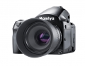

玛米亚645DF+相机支持利图酷图80，60和40数码后背，同时也支持其他来自不同品牌的50余款数码后背和80款不同镜头，这令玛米亚645DF+相机成为高端摄影机行业里具最多功能的摄影机平台。
这是一台操控简单、性能稳定的中画幅机身啊，而且支持众多的数码后背与中画幅镜头，虽然要体验不同数码后背和中画幅镜头不是容易的事，但这种兼容性也非常不错的。
645DF+的快门速度从1/4000到60分钟，普通使用者如我这般，运动的物体又或者是慢门拍摄，已经能够满足需求啦。而且以铝和镁为主要材质的机身，拿在手中真的感觉到实在。
初烧中画幅，也没别的器材比较过优劣，硬要诟病，就只能说电池似乎不怎么耐用了，以上愚见欢迎各大侠指点并纠正。